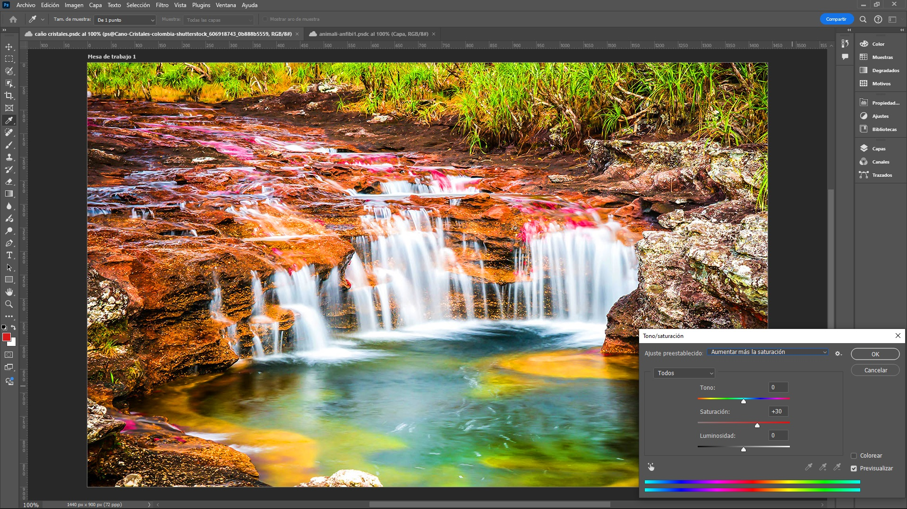
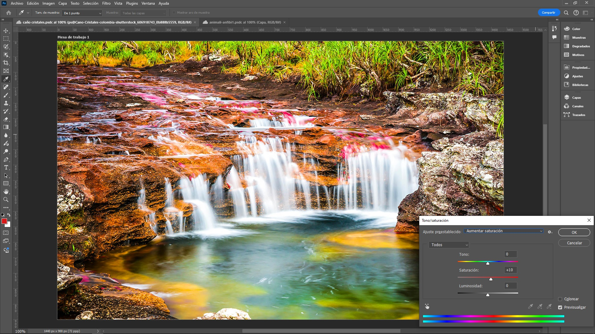
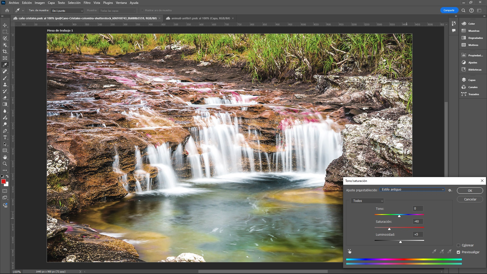
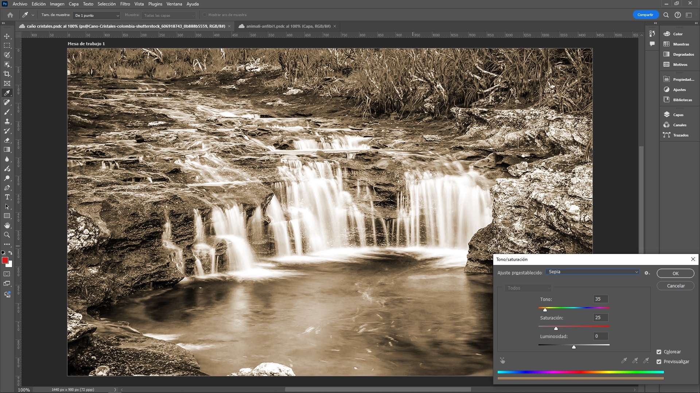
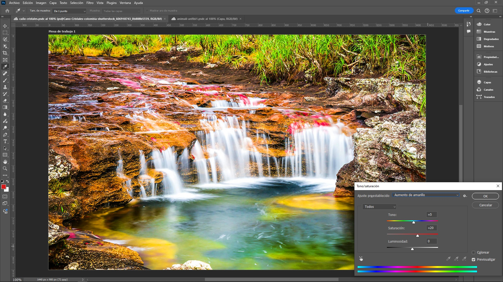
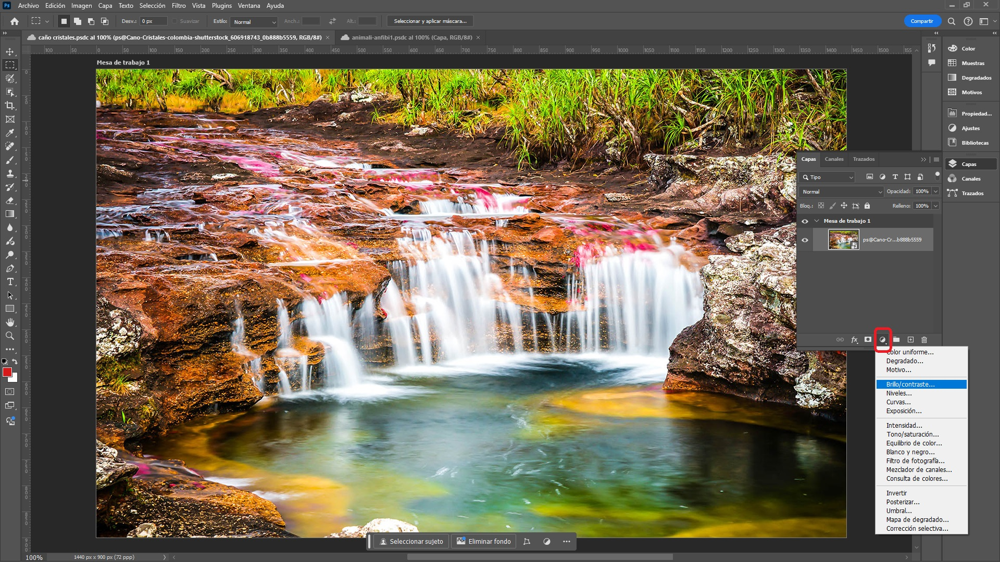
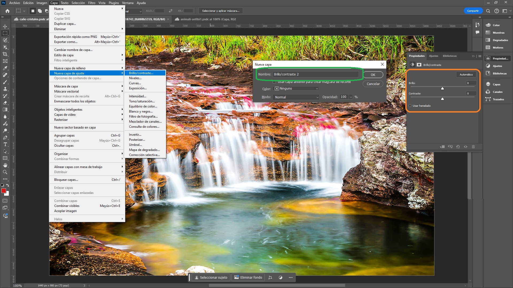

Ajuste de Tono, Brillo y Saturación
En Photoshop, el ajuste de tono, brillo y saturación es una herramienta clave para la edición de imágenes. Permite modificar las propiedades de color y luminosidad de una imagen, lo que es esencial para mejorar la apariencia visual o para lograr efectos artísticos específicos.
Conceptos Básicos
En esta sección se dará una breve explicación de los conceptos de tono, brillo y saturación.
Tono (Hue)
El tono se refiere a la característica de un color que determina su posición dentro del espectro de luz visible. En términos más simples, el tono es lo que comúnmente se conoce como el "color" de algo. Por ejemplo, una manzana puede ser roja, verde o amarilla, y cada uno de estos colores representa un tono diferente. En Photoshop, ajustar el tono implica cambiar los colores de una imagen. Por ejemplo, si una imagen tiene un tono rojizo, al modificar el tono se puede transformar ese rojo en otro color, como azul o verde. Esta modificación es útil tanto para corregir colores como para crear efectos de color específicos.
Brillo (Brightness)
El brillo se refiere a la luminosidad general de la imagen. Ajustar el brillo en Photoshop aumenta o disminuye la claridad de toda la imagen. Un mayor brillo aclara la imagen, mientras que un menor brillo la oscurece. Esto es útil para corregir imágenes que están demasiado oscuras o demasiado claras.
Contraste
el contraste es la diferencia entre las partes claras y oscuras de una imagen. Si una foto tiene mucho contraste, las áreas claras son muy brillantes y las áreas oscuras son muy oscuras, lo que hace que los detalles sean más definidos y sobresalientes. Por ejemplo, en una foto con alto contraste, las sombras serán muy oscuras y los puntos de luz serán muy brillantes.
En cambio, si una foto tiene poco contraste, las diferencias entre las áreas claras y oscuras son menores, lo que hace que la imagen se vea más suave y sin tanto detalle. Las fotos con bajo contraste pueden parecer un poco "planas" porque no hay mucha variación entre las partes más claras y las más oscuras.
Intensidad
La intensidad de los colores se refiere a la riqueza o profundidad de los colores en una imagen. Este concepto está relacionado con la saturación y vibrancia de los colores. Aquí se explica ambos aspectos:
- Saturación: Es la medida de cuán puro o intenso es un color. Un color
completamente saturado es muy brillante y vibrante, mientras
que un color menos saturado tiende a ser más apagado y deslavado.
Aumentar la saturación hace que los colores sean más vivos y pronunciados, mientras que reducirla hace que los colores se acerquen a tonos de gris. - Vibrancia: Es un ajuste que incrementa la intensidad de los colores menos
saturados sin afectar demasiado a los colores ya intensos, lo que ayuda a mantener un equilibrio más
natural en la imagen.
Aumentar la vibrancia intensifica los colores apagados y mejora la apariencia general sin saturar en exceso los colores ya vibrantes.
Ajustar Brillo y Contraste
Para ajustar el tono se escoge del menú principal la siguiente opción Brillo / Contraste en la siguiente ruta imagen > Ajustes > Brillo / Contraste >, si esta opción no está habilitada es porque es necesario tener la capa seleccionada en donde está la imagen.
Las imágenes pueden tener su brillo y contraste ajustados según el criterio del usuario, modificando la posición del deslizador o cambiando el porcentaje.
La opción Usar Heredado es útil para replicar efectos específicos o mantener la coherencia en proyectos antiguos al aplicar ajustes o configuraciones de versiones anteriores del software. Esta opción permite conservar la misma apariencia y comportamiento de las herramientas y filtros que estaban presentes en versiones anteriores de Photoshop, evitando cambios inesperados en los resultados que podrían ocurrir si se usan las configuraciones más recientes. Es especialmente beneficioso cuando se trabaja en proyectos que fueron iniciados en versiones anteriores y se desea preservar la misma estética o funcionalidad.
La opción Automático de brillo y contraste en Photoshop está diseñada para ajustar automáticamente estos parámetros en una imagen, con el objetivo de mejorar su apariencia general sin necesidad de realizar ajustes manuales. Al seleccionar esta opción, Photoshop analiza la imagen y aplica los cambios necesarios para optimizar el brillo y el contraste de manera que la imagen sea visualmente más atractiva y equilibrada. Este ajuste automático puede ser útil para obtener resultados rápidos y efectivos, aunque a veces puede ser necesario realizar ajustes adicionales para obtener el resultado deseado.
Es necesario tener cuidado con esta forma de trabajo, ya que es destructiva, es decir, los cambios se reflejan directamente en la imagen original. Más adelante, se estudiará una forma de trabajar que no es destructiva.
Ajustar la Intensidad
Para ajustar la intensidad se tiene la ruta de opciones en el menú principal Imagen > Ajustes > Intensidad
La intensidad o vibrancia y la saturación se configuran con los controles deslizables.
Para restaurar los valores oprimir la tecla alt y esperar que en la ventana emergente de intensidad cambie el botón Cancelar en Restablecer.
Esta también es destructiva. Más adelante, se estudiará una forma de trabajar que no es destructiva.
Ajuste de Tono y Saturación
Para llegar a esta opción se tiene la ruta desde el menú principal Imagen > Ajustes > Tono / Saturación.
En esta ventana se tiene la opción Ajuste Preestablecido con las siguientes posibilidades:
- Por efecto: este ajuste es generalmente neutral.
- Cianotipo: Se simula el efecto de un proceso fotográfico antiguo llamado
cianotipia. Esta técnica fotográfica histórica produce imágenes en un tono azul cian característico.

- Aumentar más la Saturación: Los colores en la imagen se vuelven más vivos
e intensos. Los tonos anteriormente apagados adquieren mayor fuerza, mientras que los colores que ya
eran intensos se acentúan aún más. La saturación aumenta en un 30%.

- Aumentar la Saturación: Los colores en la imagen se vuelven más vivos
e intensos. Los tonos anteriormente apagados adquieren mayor fuerza, mientras que los colores que ya
eran intensos se acentúan aún más. La saturación aumenta en un 10%.

- Estilo Antiguo: aplica un efecto que da a la imagen un aspecto vintage o
retro.

- Aumento de Rojo: la imagen tendrá un incremento en la intensidad de los
tonos rojos, lo que hará que los rojos se vuelvan más prominentes y vibrantes. Otros colores también
pueden verse afectados dependiendo de la configuración específica.

- Sepia: es un filtro de edición de imágenes que da a las fotos un tono
cálido y dorado, imitando el aspecto de las fotografías antiguas. Se usa comúnmente para dar un toque
vintage o nostálgico a las imágenes. El efecto sepia se logra añadiendo una tonalidad marrón cálido a la
imagen, lo que puede hacer que los detalles y texturas se vean más suaves y menos nítidos, replicando el
look de las fotografías tomadas con cámaras de película antiguas.

- Saturación Fuerte: Photoshop aumenta el nivel de saturación global de la
imagen. Esto significa que los colores se vuelven más intensos y saturados, lo que puede hacer que la
imagen luzca más vibrante y llamativa. Sin embargo, un aumento excesivo en la saturación puede llevar a
que los colores se vean poco naturales o exagerados, y pueden aparecer artefactos visuales como halos
alrededor de los objetos. La saturación aumenta en un 50%.
- Aumento de Amarillo: incrementa la presencia del color amarillo, haciendo
que las áreas amarillas de la imagen se vuelvan más notables y vibrantes. Esto puede cambiar el balance
de colores y hacer que la imagen tenga un tono más cálido o dorado en general.

Creación de Tonos Propios: También se pueden crear tonos preestablecidos propios en Photoshop, lo que permite personalizar la apariencia de las imágenes según las necesidades. A continuación, se explica cómo hacerlo:
- En el panel de Tono/Saturación, ajustar los deslizadores para cambiar el Tono, Saturación y Luminosidad hasta que se consiga el efecto deseado.
- Tono: Cambiar el matiz general de los colores.
- Saturación: Ajustar la intensidad de los colores.
- Luminosidad: Ajustar el brillo de los colores.
Guardar el Tono Propio:
- Una vez que se esté satisfecho con los ajustes, hacer clic en el menú desplegable Editar, el engranaje, dentro del panel de Tono/Saturación.
- Seleccionar Guardar Valor para guardar el ajuste como un preestablecido.
- Se abrirá un cuadro de diálogo donde se puede nombrar el nuevo preestablecido. Introducir un nombre descriptivo y hacer clic en OK.

La Edición de Gama de Colores permite a los usuarios modificar los valores de Tono, Saturación y Luminosidad para colores específicos, como "Rojos", "Amarillos", "Verdes", "Cianes", "Azules" y "Magenta", proporcionando un control detallado sobre cómo se representa cada gama de color en la imagen final.
Esta opción es una herramienta poderosa para realizar ajustes precisos y personalizados en la imagen. Al seleccionar un rango de color específico, el usuario puede modificar únicamente esos colores sin afectar a los demás presentes en la imagen.
Colorear: En el ajuste de Tono/Saturación de Photoshop, la casilla Colorear tiene la función de aplicar un tinte uniforme a toda la imagen o a una selección específica de la misma. Al activar esta casilla, se desactivan los ajustes específicos de gama de colores y se permite teñir la imagen con un solo color, determinado por los controles de Tono, Saturación y Luminosidad.
Para restaurar los valores oprimir la tecla alt y esperar que en la ventana emergente de intensidad cambie el botón Cancelar en Restablecer.
Capas de Ajuste
Las Capas de Ajuste en Photoshop son una herramienta poderosa que permite aplicar efectos de color y tono a una imagen sin alterar de manera permanente los píxeles originales. Estas capas son no destructivas, lo que significa que se pueden modificar o eliminar en cualquier momento sin afectar la imagen base.
Características Principales de las Capas de Ajuste
- No Destructivas: Al aplicar un ajuste a través de una capa de ajuste, la imagen original no se modifica. Esto permite experimentar con diferentes efectos sin temor a perder la calidad original de la imagen.
- Flexibilidad: Las capas de ajuste se pueden editar, apagar, o eliminar en cualquier momento. Además, se pueden aplicar a capas específicas o a toda la imagen.
- Máscaras: Cada capa de ajuste viene con una máscara de capa asociada. Esto permite aplicar el ajuste solo a partes específicas de la imagen, creando efectos más complejos y personalizados.
- Apilamiento y Orden: Las capas de ajuste se pueden apilar y el orden en que se colocan afecta el resultado final. Esto permite crear efectos complejos mediante la combinación de múltiples ajustes.
Tipos de Capas de Ajuste
- Brillo/Contraste: Ajusta la luminosidad y el contraste.
- Niveles: Modifica los niveles de luz en una imagen.
- Curvas: Permite ajustes precisos del tono y el contraste.
- Balance de Color: Cambia los tonos de color en las sombras, los tonos medios y las luces.
- Tono/Saturación: Ajusta el tono, la saturación y la luminosidad de los colores.
- Blanco y Negro: Convierte la imagen a blanco y negro con control sobre la mezcla de los colores originales.
- Filtro de Foto: Aplica un filtro de color para alterar el tono general.
- Mezclador de Canales: Controla cómo se mezclan los canales de color.
- Buscar Colores: Aplica un efecto de color mediante una tabla de búsqueda de color (LUT).
Capa de Ajuste
Se puede crear una capa de ajuste de dos formas diferentes:
- Panel de Control: En al panel de capas y picar sobre el ícono
 o "Crear una nueva capa de ajuste o relleno" en la parte inferior del
panel
Capas y seleccione un tipo de capa de ajuste, en este caso "Brillo/Contraste...":
o "Crear una nueva capa de ajuste o relleno" en la parte inferior del
panel
Capas y seleccione un tipo de capa de ajuste, en este caso "Brillo/Contraste...":
 - Menú Principal: Capa > Nueva Capa de
Ajuste > Brillo/Contraste...
Se puede cambiar el nombre de la capa. En esta opción ya se puede realizar el ajuste de valores de Brillo/Contraste.
Una vez creada, la Capa de Ajuste aparecerá en el panel de capas, por encima de la capa o capas a las que
afectará. Para editar esta capa de ajuste se debe picar sobre el icono
 , en este caso Brillo / Contraste.
, en este caso Brillo / Contraste.
Si no se está de acuerdo con los ajustes se borra únicamente esta capa con el icono de eliminación o click derecho Eliminar Capa: